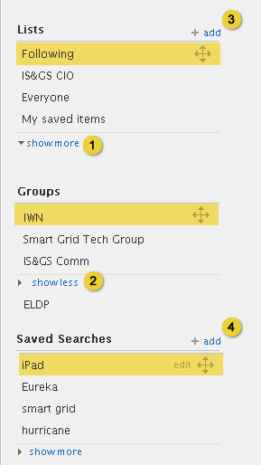
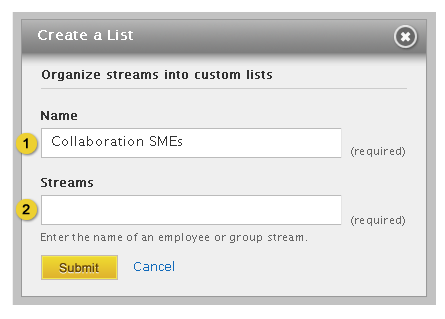

Home > Product Specification > Features > Manage lists, groups, and saved searches
Manage lists, groups, and saved searches
Configure a stream
Search a stream
Overview
Knowledge workers can create apps based on default or custom lists or searches that are created. Custom lists and saved searches allow the knowledge worker to quickly and easily review activity.
Conditions of satisfaction
- The knowledge worker must be able to create an app from a list, saved search, or group stream.
- The knowledge worker must be redirected to the start page after creating an app from a list, saved search, or group stream
- The knowledge worker must be able to create a custom list that includes one or more colleagues or groups.
- The knowledge worker must be warned when the title for a custom list is not provided.
- The knowledge worker must be warned when no colleagues or groups are selected for a custom list.
- The knowledge worker must be able to edit the colleagues and groups that comprise a list.
- The knowledge worker must be able to delete a custom list.
- The knowledge worker must be able to reorder lists.
- The knowledge worker must be able to hide lists from the default view.
- The system must set the predefined list representing the colleagues a knowledge worker is following.
- The knowledge worker must be able to create a saved search that includes one or more keywords applied to a predefined or custom list.
- The knowledge worker must be warned when the title for a saved search is not provided.
- The knowledge worker must be warned when keywords for a saved search are not provided.
- The knowledge worker must be able to edit a saved search.
- The knowledge worker must be able to delete a saved search.
- The knowledge worker must be able to reorder saved searches.
- The knowledge worker must be able to hide saved searches from the default view.
- The knowledge worker must be able to reorder groups.
- The knowledge worker must be able to hide groups from the default view.
User experience
Creating New Custom Lists and Saved Searches

- Clicking the “show more” link displays all the list, group or saved search items.
- Clicking the “show less” link hides the list, group or saved search items.
- A knowledge worker can create a custom list by clicking on the add link. Custom lists can be edited and deleted.
- A knowledge worker can create a saved search by clicking on the add link. Saved searches can be edited and deleted.
Creating a List

- Input box to enter a name for the list. Name field supports up to 50 characters.
- Input box to enter the name of a stream the knowledge worker wants to include in the list.

- As the knowledge worker types matches to individual or group streams are displayed in a drop down menu.

- Entering or selecting a valid stream name displays the name of the stream. Knowledge workers can remove the stream by clicking the “x” button which will display an empty input box.
- As additional streams are added they are shown in rows of three.
- When a new list is successfully saved, a warning message will appear at the top of the page telling the user: “Your list has been successfully saved” If one or both of the required fields are left blank the following message will appear above the form: “Name field is required” and “At least one stream is required”.

- The new list appears selected and at the bottom of the list section.
Editing List

- Input box to modify the list name.
- Input box to enter the name of a stream the knowledge worker wants to include in the list.
- When a new list is successfully saved, a warning message will appear at the top of the page telling the user: “Your list has been successfully saved” If one or both of the required fields are left blank the following message will appear above the form: “Name field is required” and “At least one stream is required”.
- Clicking the delete button displays a pop-up window asking the knowledge worker the following: “Apps based on this list will need to be manually deleted from the Start Page. Saved Searches based on this list will be automatically deleted. Are you sure you want to delete this list?” If the knowledge worker clicks “yes” the list is deleted and a warning message is displayed with a close link: “The list and associated searches have been deleted”.
Note: There are additional scenarios where a custom list is automatically modified or deleted.
- If a knowledge worker leaves a private group and a custom list is based on the private group’s stream, automatically delete the group from the custom list. Delete the entire custom list if the group is the only stream in the list.
- If a knowledge worker leaves a public group, do not delete the custom list.
- If a Public or Private group is deleted, automatically delete the group stream from the custom list. Delete the custom list if the group is the only stream in the list.
Managing Custom Lists

- Default state
- Hover state
- Selected state of list item. Clicking edit displays a modal titled “Edit List” which is pre-populated with the parameters of that list.
- Clicking and dragging the move icon allows the knowledge worker to reposition the item anywhere in the list.
- A dashed drop zone image appears as the knowledge worker drags the items within the list. As the knowledge worker drags the item, the other list items move to provide a space for the list item.
- Dragging the item below the show more link expands the section allowing the user to reposition the list item.
- Releasing the list item leaves the item selected.
Creating a Saved Search

- Input box to enter a name for the saved search. Name fields supports up to 50 characters.
- The knowledge worker can select a predefined or custom list.
- The “My Lists and Groups” drop down contains an alphabetically sorted list of all the knowledge workers custom lists and groups. If the knowledge worker does not have any lists and does not belong to any groups, this option will be hidden.
- Input box to enter one or more keywords. Keywords field supports up to 50 characters per keyword and an infinite number of characters.
- When a new list is successfully saved, a warning message will appear at the top of the page telling the user: “Your search has been successfully saved” If one or both of the required fields are left blank the following message will appear above the form: “Name field is required” and “At least one stream is required”
Editing a Saved Search

- Input box to edit a Saved Search name.
- The knowledge worker can select a predefined or custom list.
- The “My Lists and Groups” drop down contains an alphabetically sorted list of all the knowledge workers custom lists and groups. If the knowledge worker does not have any lists and does not belong to any groups, this option will be hidden.
- Input box to enter one or more keywords.
- When a new list is successfully saved, a warning message will appear at the top of the page telling the user: “Your search has been successfully saved” If one or both of the required fields are left blank the following message will appear above the form: “Name field is required” and “At least one stream is required”
- Clicking the delete icon displays a pop-up window asking the knowledge worker the following: “Apps based on this search will need to be manually deleted from the Start Page. Are you sure you want to delete this saved search?” If the knowledge worker clicks “yes” the saved search is deleted and a warning message is displayed with a close link: “The search has been deleted”.
Note: There are additional scenarios where a saved search is automatically modified or deleted.
- If a knowledge worker leaves a private group and a saved search is based on the private group’s stream, automatically delete the saved search.
- If a knowledge worker leaves a public group, do not delete the saved search.
- If a Public or Private group is deleted and a saved search is based on the private group’s stream, automatically delete the saved search.
Editing a Search Saved from an Activity Stream

- Input box to edit a Saved Search name.
- Displays the stream where the search was originally created. This option should only be displayed if the saved search is tied to a stream search.
- Input box to enter one or more keywords.
- When a new list is successfully saved, a warning message will appear at the top of the page telling the user: “Your search has been successfully saved” If one or both of the required fields are left blank the following message will appear above the form: “Name field is required” and “At least one stream is required”
- Clicking the delete icon displays a pop-up window asking the knowledge worker the following: “Apps based on this search will need to be manually deleted from the Start Page. Are you sure you want to delete this saved search?” If the knowledge worker clicks “yes” the saved search is deleted and a warning message is displayed with a close link: “The search has been deleted”.
Note: There are additional scenarios where a saved search is automatically modified or deleted.
- If a knowledge worker leaves a private group and a saved search is based on the private group’s stream, automatically delete the saved search.
- If a knowledge worker leaves a public group, do not delete the saved search.
- If a Public or Private group is deleted and a saved search is based on the private group’s stream, automatically delete the saved search.
Managing Saved Searches

- Default state
- Hover state
- Selected state of saved search item. Clicking edit displays a modal titled “Edit a Saved Search” which is pre-populated with the parameters of that list.
- Clicking and dragging the move icon allows the knowledge worker to reposition the item anywhere in the list.
- A dashed drop zone image appears as the knowledge worker drags the items within the list. As the knowledge worker drags the item, the other list items move to provide a space for the saved search item.
- Dragging the item below the show more link expands the section allowing the knowledge worker to reposition the saved search item.
- Releasing the saved search item leaves the item selected.
Creating an activity app

- Knowledge workers can create an activity stream app by clicking on the create app icon.
- Hovering over the create app icon displays the text “create app”. When the user clicks the icon or link, the user is taken to their start page where the new activity app is placed in the upper left hand corner of the first tab.
- For longer names, the name should be faded out with 20px between the end of the name and start of the create app icon. There should also be 20px between ‘create app’ and the ‘search all activity’ box.

- App title is the name of the list, saved search, employee, group, or organization.
- Links to activity detail page, opens the comment box and puts it in focus.
- Date/time stamp links to the activity permalink page.
- Link to the list, group, saved search, or stream.

- If the list, group, saved search, or stream no longer exists, display this message. If the knowledge worker is no longer a member of a private group, display the Request Access to Private Group message in the View and manage a group profile design
Test Plans
Knowledge Worker
- Action: Create an app from a list, saved search or group stream
- Verify the option to create an app is present
- Verify the app successfully appears on the start page
- Action: Redirect user to start page after creating an app from a list, saved search or group stream
- Verify the correct content is being displayed within the app
- Verify the title of the app reflects the type of stream the app was based on
- Action: Create a custom list including one or more colleagues or groups
- Verify a custom list can be created including 1 or more colleagues or group
- Verify the custom list is displayed in the list section of the activity page
- Verify the activity of the colleagues or groups added to the custom list are displayed on the list’s stream
- Action: Check error handling when creating a custom list
- Verify error handling is present when the title is not present
- Verify error handling is present when no colleagues or groups have been selected
- Action: Edit a custom list
- Verify a custom list can be edited
- Verify error handling is present when editing
- Action: Delete a custom list
- Verify the custom list is removed from the activity page
- Action: Reorder lists
- Verify default and custom lists can be reordered within the list section on the activity page
- Action: Hide and show lists
- Verify custom lists are hidden by default
- Verify the ability to toggle between show more and show less
- Action: Show following list
- Verify the following list is shown
- Action: Create a saved search including 1 or more keywords
- Verify a saved search can be created using 1 or more keywords
- Verify the saved search appears in the saved search section
- Action: Check error handling when creating or editing a saved search
- Verify error handling is present when the title is not present
- Verify error handling is present when no keywords have been identified
- Action: Edit a saved search
- Verify a saved search can be edited
- Verify error handling is present when editing
- Action: Delete a saved search
- Verify a saved search can be deleted
- Verify the saved search is removed from the activity page
- Action: Reorder saved searches
- Verify saved searches can be reordered within the saved search section on the activity page
- Action: Hide and show saved searches
- Verify saved searches are hidden by default
- Verify the ability to toggle between show more and show less
- Action: Reorder saved groups
- Verify groups can be reordered within the groups section on the activity page
- Action: Hide and show groups
- Verify the ability to toggle between show more and show less
Group Coordinator
- Action: Execute same tests as Knowledge Worker
- Verify tests executed successfully
Organization Coordinator
- Action: Execute same tests as Knowledge Worker
- Verify tests executed successfully
Root Organization Coordinator
- Action: Execute same tests as Knowledge Worker
- Verify tests executed successfully
| PAGE CONTENTS
Version 0.9
Documentation is also available for all of the following versions:
1.0 | 1.1 | 1.5 | 2.0
|